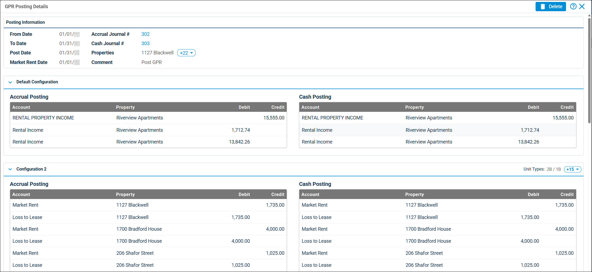

Source: https://rmxhelp.rentmanager.com/Topics/Express/CSH/GPR-Posting-Details.htm
GPR Posting Details (Page)
Gross potential rent (GPR) is the maximum revenue that a property could generate if it was rented at full capacity and at full market value. You can calculate a property's GPR and use the data to analyze profitability, forecast income, and identify risks.
When you post the monthly GPR for properties, Rent Manager creates a journal entry that reduces the rental income general ledger (GL) account to $0 and then adjusts other designated income GL accounts to project maximum revenue through metrics such as market rent, loss to lease, and vacancy loss. Breaking rental income into components makes it easier to spot where profits are not being maximized.
On the GPR Posting Details page, you can view information about a single GPR posting.
Related Privileges
| Group | Privilege | Column |
|---|---|---|
| Accounting | Post gross potential rent | Enabled |
For more information, refer to Control User Access.
To view the details of a GPR posting, go to  arrow_forward Accounting arrow_forward Gross Potential Rent arrow_forward GPR Posting History. Then, next to the posting you want to view, click
arrow_forward Accounting arrow_forward Gross Potential Rent arrow_forward GPR Posting History. Then, next to the posting you want to view, click  arrow_forward Details.
arrow_forward Details.

Posting Information
In this section, general information about the posting's date, journal entry, and property can be viewed.
| Field | Description |
|---|---|
|
From Date |
The first day of the last full month prior to the current date or the first day since the last GPR post date. |
|
To Date |
The last day of the last full month prior to the current date or one month after the From Date. |
|
Post Date |
The date on which the posting was made. |
|
Market Rent Date |
The date you wish to examine market rent for the associated units. |
|
Accrual Journal # |
The Journal # of the accrual basis journal entry created when GPR was posted. |
|
Cash Journal # |
The Journal # of the cash basis journal entry created when GPR was posted. |
|
Properties |
The name of the property(s) for which GPR was posted. |
|
Comment |
Additional information about the posting displayed on the journal entry. |
Column Descriptions
This columns for each configuration display the debits and credits allocated to each GL account for the selected properties in both cash and accrual basis. The allocations for accrual and cash postings display separately.
More Information
If you select multiple configurations for a GPR posting, the allocations for each configuration displays in a separate section. For more information, refer to Post Gross Potential Rent (GPR).
| Column | Description |
|---|---|
|
Account |
The GL account being either debited or credited in the GPR posting. |
|
Credit |
The amount credited to the specified account. |
|
Debit |
The amount debited to the specified account. |
|
Property |
The property associated with the GPR journal entry. |